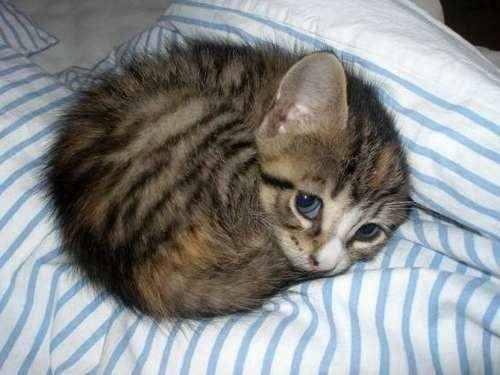

Adopt-A-Cat!
Toggle navigation
Home
About
Kittens
Contact

Find and adopt the cuuuuuuutest kitten, or put your cute kitty up for adoption!
Kitten For Adoption?
Add a Kitten
Description
Add Kitten
New Adoption List